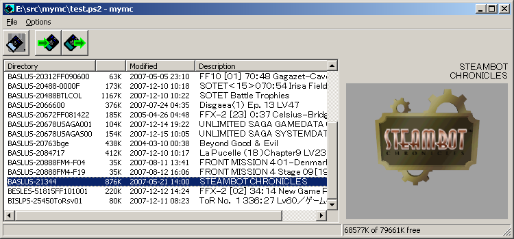

mymc is a public domain utility for working with PlayStation 2 memory card images (.ps2) as used by the PlayStation 2 emulator PCSX2. It allows save files in the MAX Drive (.max), EMS (.psu), SharkPort (.sps), X-Port (.xps) and Code Breaker (.cbs) formats to be imported directly into these images. It can also export save files in eiter the MAX Drive and EMS formats. See the README.txt file included in the distribution below for more details.

The Windows release of mymc requires the April 2006 DirectX update. You can download and install all of the DirectX updates using Microsoft's DirectX End-User Runtime Web Installer. Users of Windows Vista, Windows 7 or newer may need to download and install the files MSVCR71.DLL and MSVCP71.DLL into the same directory you installed mymc. Unfortunately, Microsoft doesn't make these files available for download, so I can't provide a link to them.
If you're using Windows 98 or Windows ME then you may also need UNICOWS.DLL, and GDIPLUS.DLL. If necessary download and copy these files to the same directory you unpacked mymc.
The Python release optionally requires wxPython. It will work without it, but the GUI mode won't be available.
Current Windows Release: mymc-alpha-2.6.zip (~4.5M)
Current Python Source Release: mymc-pysrc-2.6.zip (~48k)